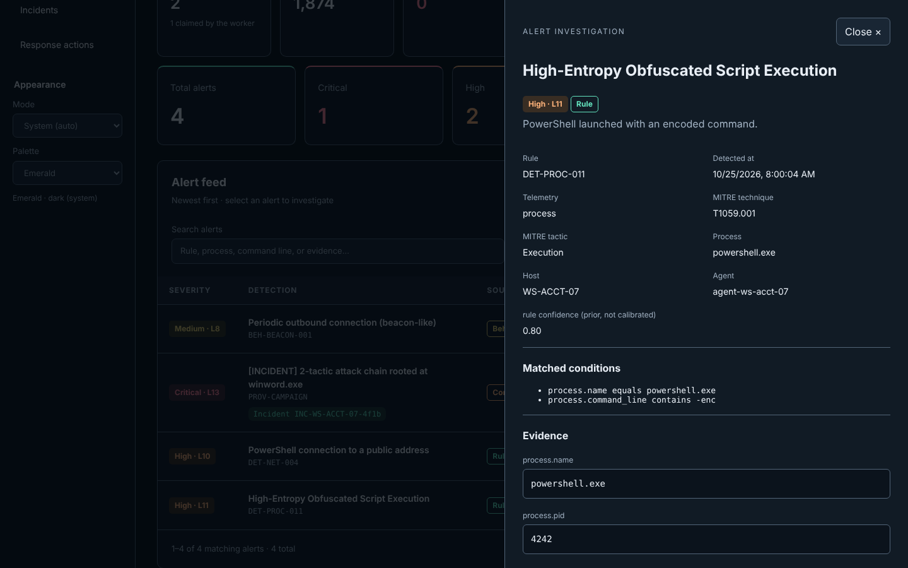
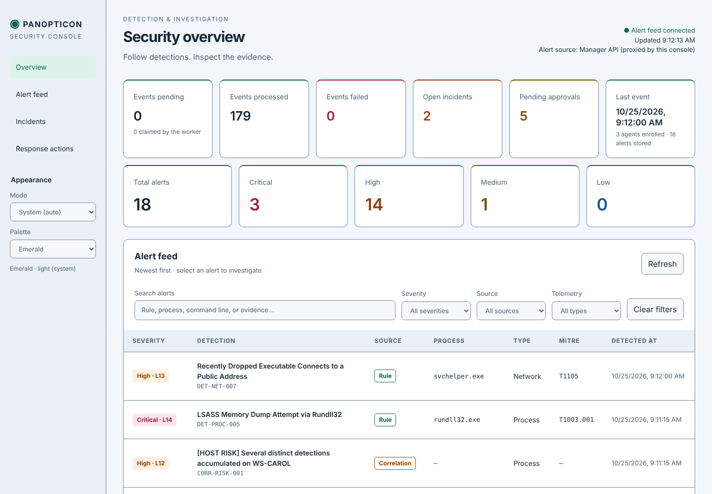

Seven building blocks, each in its own repository
Every component has its own CI and its own status documentation. The summaries below link straight to the evidence.
Windows agent — Officer
A native Windows endpoint agent. It collects from ETW (including Microsoft-Windows-Kernel-Process), Sysmon, Windows Event Log channels, the USN journal, registry and file integrity, and normalizes everything into canonical endpoint records.
Records go through a durable, encrypted on-disk delivery journal to the Manager over HTTPS. Authorized commands run locally: process termination bound to boot and start time, file collection and quarantine, and host isolation through Windows Filtering Platform filters.
Builds are documented for x64 and ARM64.
Verified so far
Cross-VM end-to-end run on 2026-10-27: 4,059 live canonical records ingested; a KILL_PROCESS command completed a full result-v2 round trip; native CTest 48/48.
Still open: the capability matrix tracks domains A–AN and states that no domain is yet qualified as complete.
Linux sensor — panopticon-sensord
A Linux endpoint sensor built on eBPF CO-RE, fanotify and audit netlink. It writes records to an on-disk WAL before delivery and sends them in its own linux-endpoint/1.0 envelope.
Telemetry families: process, memory and kernel, file, network, authentication (partial), security, containers, host state, policy and response, and self-monitoring (tamper, health, loss).
The sensor executes only Manager-signed ES256 commands, signs collected evidence with an endpoint-enrolled key, and isolates hosts through a separate privileged helper.
Verified so far
Validated on Ubuntu 22.04, kernel 5.15, x86_64. Two soak runs completed; the second ran in a degraded environment.
Still open: the self-integrity monitor has not been soak-tested.
Detection engine — eyedetect
A Python library that turns normalized events into alerts and incidents. Rule types: single-event, sequence, threshold and value-count. Detections are correlated over a provenance graph into incidents, with beaconing detection, an opt-in behavioral rarity baseline, and an experimental ML scorer (panopticon_detection/ml/).
The engine detects and recommends. It never executes anything; the Manager runs it in-process.
| Category | Rules |
|---|---|
| process | 12 |
| persistence | 9 |
| credential_access · defense_evasion · linux_process · network | 6 each |
| malware · privilege_escalation | 4 each |
| file · impact · lateral_movement | 3 each |
| collection · exfiltration | 2 each |
| discovery · execution · initial_access | 1 each |
Response engine
Pure domain logic with no I/O: the closed seven-action vocabulary, the two authorization tiers, translation of detection recommendations into typed actions, and the response lifecycle state machine.
Like the detection engine, it runs in-process inside the Manager as a pinned submodule.

Manager
The control plane. It handles endpoint and analyst enrollment, telemetry ingestion, the asynchronous detection worker, response authorization and dispatch, signed evidence custody with artifact key rotation and revocation, and operational health endpoints.
Migration 27 added a SHA-256 hash-chained ledger over command audit, response decisions and artifact custody, with a verify endpoint and checkpoints.
Test evidence
The 2026-10-27 Windows cross-VM validation recorded 285 Manager tests alongside the endpoint run.
Console
Analyst views for pipeline health, alerts, incidents and the response queue. A standard-library Python server with no build step, in two modes: live data from the Manager, or offline files.


Contracts
The canonical wire schemas: legacy telemetry, Windows endpoint record 1.0, the Linux endpoint envelope, and Command / CommandResult. Golden fixtures ship with them, and producers and consumers test against those fixtures in their own CI.